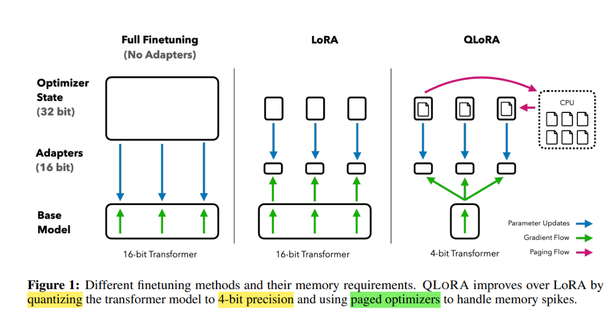

QLora
一、背景与挑战
LoRA 通过低秩分解减少微调参数，大幅降低训练资源需求，但面对超大模型（百亿参数及以上）时， 显存仍然紧张。
这是因为：
-
大模型原始权重和激活仍占用大量显存；
-
传统 16/32 位浮点训练难以在单卡或小规模集群上运行。
-
为此，社区尝试引入量化技术，将模型权重压缩至更低比特表示，减少显存占用。
QLoRA 正是将 LoRA 和 4-bit 量化完美结合，兼顾微调灵活性和显存优化。
二、QLoRA 的核心技术原理

QLoRA 基于以下两大技术点：
1. 4-bit 权重量化
利用如 SmoothQuant、GEMMLOWP 等先进量化方法，将预训练模型的权重压缩到 4-bit 表示，显 存占用减少约4倍，且对精度影响极小。
- 这种量化支持混合精度推理和训练，有效缓解硬件瓶颈。
1 # 1. 加载 4-bit 量化模型 2 model = AutoModelForCausalLM.from_pretrained( 3 "huggingface/llama-7b", 4 load_in_4bit=True, 5 device_map="auto", 6 quantization_config={ 7 "bnb_4bit_compute_dtype": "float16", 8 "bnb_4bit_use_double_quant": True, 9 "bnb_4bit_quant_type": "nf4" 10 } 11 )
- 低秩增量微调（LoRA） 在量化模型基础上，继续使用 LoRA 低秩矩阵 A,B 对权重增量进行微调。 由于只微调小量参数，训练过程的显存开销更小。
1 # 2. 配置 LoRA 微调 2 lora_config = LoraConfig( 3 r=8, 4 lora_alpha=16, 5 lora_dropout=0.1, 6 bias="none", 7 task_type="CAUSAL_LM" 8 ) 9 model = get_peft_model(model, lora_config)
- 分页优化（Paged Optimizer） 引入分页优化机制，将优化器状态和梯度按页（page）分块管理，避免一次性加载全部数据到显 存。 通过分页技术，训练过程中显存占用更加均衡且可控，进一步降低显存峰值，提升训练大模型的稳 定性和效率。
1 # 3. 配置分页优化器 2 optimizer = PagedAdamW( 3 model.parameters(), 4 lr=2e-5 5 )
结合这几点，QLoRA 能在极低显存下完成超大模型微调，且训练效果接近全精度微调。
三、QLoRA 训练流程简介
-
模型权重量化 将原始预训练权重量化为 4-bit 表示，同时保持关键层激活的高精度，以保证模型稳定。
-
冻结量化权重
- 量化权重保持不变，冻结所有原始参数，避免反向传播计算量激增。
- 添加 LoRA 低秩适配器
- 在关键线性层插入 LoRA 低秩矩阵，作为可训练增量。
- 训练 LoRA 参数
- 仅训练 LoRA 模块的 A,B 矩阵参数，极大减少训练显存和计算资源。
- 推理阶段
- 结合量化权重和 LoRA 增量，支持快速推理，无需额外合并步骤。
四、QLoRA 的优势与适用场景
-
显存消耗极低
-
支持在单张 24GB 显卡（如 RTX 3090）甚至更低配置上微调百亿级大模型。
-
训练效率高
-
结合量化与低秩微调，减少计算资源浪费，训练速度更快。
-
性能几乎无损 在多个下游任务上，QLoRA 微调模型表现与全精度微调接近，且泛化能力良好。
-
灵活性强 适合多任务训练和多模型快速切换，极大节省存储空间。
五、实现细节
-
量化细节需注意
-
4-bit 量化方法要选择精度与效率平衡的方案，如 SmoothQuant，避免训练不稳定。
-
低秩大小 r 的调优
-
结合任务复杂度与硬件资源，合理设置 LoRA 秩大小，保证训练性能。
-
混合精度训练支持
-
推荐采用 FP16 或 FP8 混合精度，进一步优化显存和吞吐量。
-
训练框架兼容
-
当前 Hugging Face PEFT 已集成 QLoRA，支持快速部署和实验。